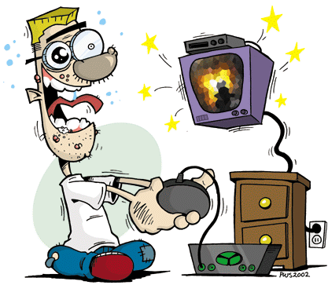

 De acuerdo a esta investigación, los niños que juegan hasta dos horas de videojuegos a la semana mejoran sus habilidades motoras y su rendimiento escolar mientras que jugar nueve o más se asocia a problemas de conducta y a menores habilidades sociales. Nosotros pensamos que no hay que jugar muchas horas por que hay chicos que estan todo el dia jugando y no les hace nada bien